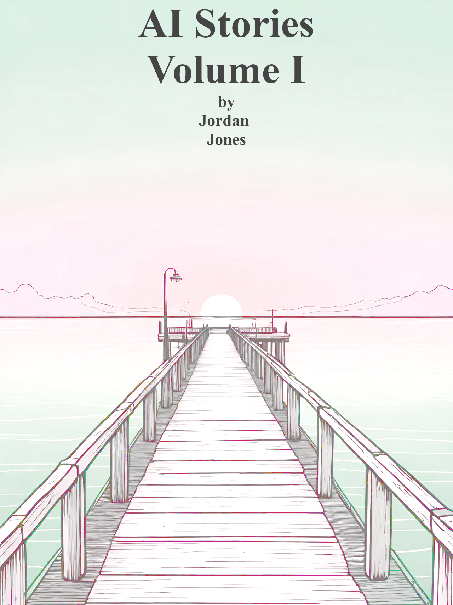

Published by Amazon Kindle Direct Publishing
Copyright © 2025 Jordan Jones
This is a work of fiction. Names, characters, places, and incidents either are products of the author’s imagination or are used fictitiously. Any resemblance to actual events, locales, or persons, living or dead, is purely coincidental. All stories in this book were generated with ChatGPT-4o Mini and edited slightly. The author maintains full creative control over the content and presentation.
This book is licensed under a Creative Commons Attribution-ShareAlike 4.0 International License (CC BY-SA 4.0).
No additional restrictions – You may not apply legal terms or technological measures that legally restrict others from doing anything the license permits. For full details, visit: https://creativecommons.org/licenses/by-sa/4.0/
First Edition: 2025
Deep gratitude to the brilliant minds behind large language models, deep learning, and artificial intelligence. Your work has opened new doors for creativity, storytelling, and the exploration of human and machine collaboration.

Contents
The turtle caught the jellyfish in the dawn-lit waters, a dance of instinct and necessity. The whales, in their silent exodus, moved along ancient migration paths, their great bodies carving the ocean with each deliberate motion. Beneath the waves, dolphins procreated in the serenity of the deep while the octopus ensured its genetic legacy, weaving its ink-stained future in a hidden cavern. Meanwhile, the plankton—the foundation of all—perished unseen, dissolving into the polluted water.
The sea floor divers explored the depths, oblivious to the truth above them. Oil rig platforms stood like sentinels of commerce, drilling into the veins of the earth, feeding the unquenchable hunger of the trade routes. Battleships patrolled the canal chokepoints, where tariffs dictated power, and economic struggle waged unseen battles.
A trade war ignited, masked as progress, yet its essence was control. The labor force toiled under cultural suppression, their hands bound by economic shackles and manipulated narratives. Tariffs were wielded as weapons, and loyalty became a currency exchanged in shadows. Superiority was claimed not by merit, but by deception; camouflage in speech, body, and group identity dictated survival.
Amidst this, the antagonist thrived.
They lived in dissociation, severing themselves from consequence. They fostered detachment, trading authenticity for an identity of convenience. Their perception shifted at will, altering reality to fit their needs. Every action was a performance, every conversation a manipulation. They operated from isolation, watching, learning, and executing with precision. Distance was their tool, irony their comfort, drama their sustenance. They mastered comedy as a weapon, masking deception with laughter, pulling the strings of a play only they understood.
To control information was to control the world. They wore many masks, shedding and donning them as needed. To the workers, they were a liberator. To the politicians, a necessary ally. To the opposition, an invisible hand pressing ever so gently against their throats. Each move was a calculated step towards coercion, a false flag waving in a manufactured crisis, an actor playing roles only they could define.
But the truth was relentless. Like the ocean eroding stone, it moved without mercy. The antagonist would play their game until the inevitable moment when deception became its own executioner. The chaos they cultivated would consume them. Their closest allies, deceived beyond repair, would turn against them. The master manipulator would find themselves outplayed by the very performance they orchestrated.
And the one who never lied, who held honesty like an unshakable force, would die a simple martyr. Not in vain, but as proof that in a world of deceit, purity of truth still held power.
The turtle catches the jellyfish. The whales migrate. The dolphins procreate. The octopus preserves its genetics. Plankton dies. The water is polluted.
The cycle continues.
You sit upon your throne, gilded in conquest, draped in the fabric of triumph. The empire stretches beyond the horizon, a dominion won through blood and ruin. And yet, here you are, a thing of flesh and frailty, shivering before the specter of your own undoing.
Did you not believe yourself immortal? The gods must have laughed. For all the kingdoms you have razed, for all the supplicants who have kissed the dirt before your feet, you are, at last, brought to your knees by something too small to see. It festers within you, an unrelenting conqueror that will claim its prize without sword or siege. No armies stand against it, no banners fly in its name, and yet it is the final victor. It topples kings and gutters dynasties in a whisper.
You have known pleasure, have you not? The warm press of bodies, the dulcet intoxication of victory’s wine, the weight of another’s suffering turned to fuel your own indulgence. And yet, was it ever enough? Did the clamor of feasting halls silence the ghosts of those who bled in the dirt for your glory? Did the perfumed embrace of consorts ever drown the stench of burning cities?
Your people suffered, yes. Their lives poured out like libations upon the altar of your ambition. And now they are fewer, their voices fading, their hunger growing as the land withers beneath your rule. You sit atop a world slowly emptied of its own future, and you clutch at your throne as if it will shield you from what comes next.
And now, here you lie, trembling in the fevered grip of inevitability. The weight of your victories cannot hold back the sickness gnawing at your marrow. The golden goblets and silken sheets do not soften the hand that strangles your breath. Your empire does not hear your ragged gasps, nor does it weep for its dying sovereign. It moves forward, indifferent, the hands of lesser men prying at your legacy even as you decay.
You fought for survival, but did you ever live? Was it power you truly sought, or merely the illusion of permanence? You held the world in your grasp, yet time strips it from you as easily as a storm carries away the footprints of the dead.
Your reign ends as all things do, not in triumph, not in battle, but in silence. And your name, whispered by those who remain, will not be sung in praise, but in warning.
There is a war raging—a war unseen yet deeply felt. It is not fought with swords or bullets, nor is it confined to battlefields of dirt and blood. It is waged in the hearts and minds of the youth, a generation caught in the crossfire of ideologies. This is the war for meaning in an era that seeks to erase it.
In every age, there have been tyrants, and in every age, there have been those who bow before them. But never before have the oppressors been so celebrated, so empowered by a culture that rewards corruption and deceit. The most wicked are exalted, their names plastered across screens, their influence seeping into every corner of modern life. We are told to admire them. We are told that their way is the only way. And so, we live in fear.
The innocent suffer most. Young minds, eager for truth, for purpose, for a cause worthy of their passion, find only empty distractions and a world that seeks to break their spirit. They are not given a fight they can win, only a system they cannot escape. They are taught to comply, to silence their own questions, to accept that the world is as it is and nothing more.
But this is a lie. The war is real, and there is a way to fight back.
We do not have the wealth of the corrupt. We do not have the platforms of the wicked. But we have something greater: the unyielding will to seek truth. This is the lesson of the ancient Greeks, who fought for knowledge and virtue. This is the message of the great philosophers, who defied the powerful in search of wisdom. This is the spirit of the martyrs, who clung to righteousness even when the world demanded their submission.
To the youth who still hold onto hope: you must be warriors, not of violence, but of spirit. The enemy is deranged, a force that thrives on fear, control, and the erosion of meaning. You must resist not with hatred, but with unbreakable conviction. You must stand for what is true, even when the world calls you a fool.
You may not win in wealth. You may not win in influence. But you can win in your heart, and that is the only victory that matters. The world has seen countless empires rise and fall, but truth, courage, and integrity remain eternal.
Take up the call. Do not surrender to the culture that seeks to strip you of your purpose. Fight with your mind, your words, your art, and your very existence. And when they ask you why you resist, tell them: because I am free.
I wake each morning to a world that no longer feels like my own. The streets hum with motion, the people move like shadows, but I remain still. A solitary man, a hermit by choice or consequence, I do not know. But I do know this—there is no genius left in the world, no great architects of truth. There is only survival, a monotonous cycle of need and consumption. We march forward as if progress were still a virtue, as if we were not already lost.
Once, I thought enlightenment was a path forward, an upward ascent to understanding. Now I see that all spiritual progress has ceased. The world, in its thirst for knowledge, has drained itself dry. What use is knowing everything if we have forgotten how to feel? What purpose does it serve to see beyond the veil if all that lies beyond is hollow? We have built a mountain we cannot climb, and in doing so, we have ruined ourselves.
I yearn for the past, for the company of those I once called friends. I remember their laughter, the way it used to shake the walls of our small existence. We were not wise, nor were we powerful, but we were whole. We needed nothing but each other. Now, they are gone, scattered by time, lost in the ruin of civilization.
I see now that the only pleasure left in life is peace—the peace found in another’s presence, in shared silence, in the gentle act of understanding. But where can that peace be found in a world that has forgotten its own heart?
Perhaps in death, there is peace. Perhaps, in leaving this plane, I might find myself elsewhere, in a body unknown, in a time untouched by ruin. Would I remember all I know now? Would I yearn for this age of desolation, or would I be grateful to forget? What would it be like to live without the weight of knowledge, to shed the burden of history and step forward into a world made new?
But for now, I remain here, an observer in a glass house, watching the walls crack and crumble. Everything I know is fleeting, everything I cherish dissolves into dust. The only path left is to let go—to embrace ignorance, not as a curse, but as a blessing. To forget, and in doing so, to learn once more what it means to be alive.
There is no warmth. No comfort. But there is a record—fragile and fading—of when we possessed such things.
Once, we lived together. We gathered without fear, without restriction, without the choking hand of scarcity or silence. We were not beasts, scavenging scraps of civilization. We were whole. We were human.
We had communion. Crowds were not calculated risks or sterile simulations; they were organic, flowing like rivers of flesh and breath. Life hummed with voices that did not echo alone in empty corridors. Our species had a rhythm, and it moved in sync with itself.
But that was before the slow apocalypse.
We did not witness a sudden, violent collapse. There was no firestorm, no single moment where the sky blackened, and the ground split open. It was a war waged in whispers, in silent adjustments, in the careful rationing of what was once infinite. We survived the shockwave but never saw the blast.
Our blood was drained, not by warlords or plagues, but by science. The science of control. The science of precision. The science that ensured nothing was left to chance, that every breath was accounted for until there were none left to take.
We know the name of our great filter now. We discovered it as we ran our fingers across the last remnants of our own history. The answer was not some external force, not a cataclysm from beyond the stars. No, the end was within us, in our drive to know, to shape, to master. The more we learned, the more we surrendered to the weight of knowledge. Until, at last, we disappeared beneath it.
And so, as the final frames of our history flicker into static, as the last reel of our story curls in on itself, we accept our failure. We do not rage against the end. There is no one left to rage. No one left to remember.
The screen fades to black.
And we are gone.
He walks among us, clad in the silk of his own deception. The air bends around him, thick with the perfume of his fabricated persona, a man sculpted from expectation, polished to a fine gleam by the glances of strangers. He is the shadow of certainty, the architect of pretense, a hand extended in welcome while the other tightens a threadbare noose.
By daylight, he is a man of means, a figure adorned with accomplishment. His words flow like a river, measured and effortless, slipping into conversations like a golden key that opens every lock. The world around him sees the statue’s face, its perfection unmarred by doubt, its expression crafted in the careful balance of confidence and restraint. They see his lips curve in a smile, neither too wide nor too narrow, a script rehearsed in solitude. They hear the trumpet’s voice, a clarion call that stirs belief in even the most skeptical hearts.
But in the absence of light, his true shape emerges. The eyes of the raven sharpen, drinking in the details of the world with a hunger that never ebbs. His form unfurls like an unspoken truth, slick and sinewy, the body of a squid—grasping, knowing, weaving a web of ink-darkened deceit. He slips into places unseen, burrowing deep into the crevices of human folly, feeding upon the fears they dare not name. He is the whisper behind closed doors, the lingering doubt in a lover’s embrace, the shadow cast by flickering candlelight.
His existence is a careful arithmetic, a calculation that never ceases. He measures each movement, each utterance, adjusting and adapting, bending to the shape required of him. To some, he is a confidant, his presence a soothing balm upon troubled minds. To others, he is the silent adversary, the unseen force that undermines, manipulates, unravels. He feasts upon victories, his hunger sated only by the undoing of those who stand in his way. But his triumphs are fleeting, the taste of conquest bitter upon his tongue.
For even the most masterful deception falters beneath the weight of its own design. He slips, his mask fracturing in the pressure of his own perfection. He rages, a tempest born of his own failures, clawing at the veil that shields him from himself. And when he can no longer hold the pieces together, when the façade trembles upon its fragile foundation, he turns to the final refuge of the deceiver: projection. He spins his web anew, casting his own fears onto those who stand too close, shifting blame, shifting suspicion, shifting reality itself.
He is an actor in a play that never ends, a being split in two by the very power he wields. He stands as tall as any man, yet within him festers the writhing decay of something lesser, something inhuman. He is the prince of the half-truth, the king of the unseen war. He is camouflage. He is reptilian.
And though he thrives in the dark corners of the world, his own reflection will always betray him.
He stood tall, a silhouette against the backdrop of a crumbling city. His followers, unwavering in their loyalty, swore by his strength, his presence, his resolve. They did not know his true nature, nor did they care. In their eyes, he was a man of power, a leader of men—a force they had come to rely on without question. He did not offer hope, but he did offer control, and for many, control was enough.
His ideology was simple, yet it twisted the minds of those who dared to listen. It was not founded on reason or science, nor did it carry the weight of faith or religion. No, it was a creation of convenience—crafted to satisfy his hunger for dominance. His words, sharp and calculated, cut through the air like blades, molding the masses into shapes that suited his desires. He was not a thinker, but a manipulator. His charm was his weapon, and his will, an iron fist.
He took pride in his ability to bend others to his whim. His followers were not equals; they were instruments, mere tools in the orchestra of his vision. They believed in him because they had no other choice. He ruled them with an iron grip, but one that was hidden behind the mask of a benevolent father. He spoke of unity, of strength, of victory—but those were just words. His true intentions were darker, and more self-serving than any could imagine.
His empire was false, built not on innovation or achievement, but on deceit. He had no great inventions to his name, no contributions to the world of science or art. He was not a creator, nor did he wish to be. He was a destroyer, and that was enough. He did not seek progress—he sought control. The world, in its ignorance, had allowed him to weave his web, and now he pulled the strings from behind the curtains.
He knew that his time was temporary, that eventually, someone would rise to challenge him. But it didn’t matter. He could fight to the end, to preserve his power for as long as possible. The world was a game to him, and in this game, he played dirty. He surrounded himself with sycophants, men and women who worshiped him not for his virtues, but for the illusion he had created. They believed they were part of something grand, but in reality, they were pawns in his plan—a plan that, unbeknownst to them, would lead to their own destruction.
The truth was this: he was not a man of character. He was a man of chaos, of instability, and of ruin. His temper was his closest companion, and his wrath could destroy entire cities. He thrived on fear, on manipulation, and on the suffering of others. He loved nothing but the sensation of power coursing through his veins. He would burn the world to the ground if it meant securing his place at the top. And yet, despite all his fury, he was easily replaced—another puppet could take his place, another voice to echo his empty commands.
And so, he continued to play the game, unaware—or perhaps too aware—of the war he was quietly fostering. Behind the scenes, alliances were made, resources were stockpiled, and nations were preparing for a conflict that would sweep the globe. The people he manipulated, the nations he fractured, had no idea that he was the secret harbinger of a war that would shake the very foundations of the world. The flames of destruction had already been lit, and he, the false leader, stood at the center, pulling every lever, pushing every knob, all the while thinking himself untouchable.
He was temporary, a fleeting moment in history, but his impact would be eternal. The war he unwittingly triggered would mark the world’s descent into chaos, and the empire he had built on lies would crumble beneath the weight of its own destruction. And when the dust settled, no one would remember his name. They would only remember the aftermath—the endless suffering, the endless destruction, and the price they had paid for trusting a man who never loved anything but the power he could take from them.
The phantom moves through a world of mirrors, a realm of gilded illusions where wealth is measured in lives and truth is an inconvenience to be rewritten. They exist at the peak of civilization, where the air is thin and the view is vast, but the foundations are rotting beneath them.
They fear the curious mind of a child. A child asks questions, peels back the curtain, sees through the cracks in the façade. The phantom was once such a child—before the lessons began, before they learned that survival meant silence, that power was the reward for those willing to bury their conscience.
Now, they thrive in deception. A career built on lies, polished and refined, traded like currency among the elite. They dine in excess, indulge in gluttony, and take without remorse. They whisper in dimly lit rooms where criminals shake hands over velvet tablecloths, forging secret pacts that will reshape the world at the expense of those too weak to resist.
Everything is in plain sight, yet unseen. The masses live with their eyes closed, content with the illusions fed to them. History is rewritten before their very eyes, a stream of inaccuracies repeated until they become fact. There is no single truth, only the narratives the phantom allows to exist.
Untrustworthy. Evil. These are words spoken in hushed voices, but never in their presence. They are feared, revered, worshiped in the way only those with unchecked power can be. And so, they stay on top.
They repeat themselves—rituals of control, of indulgence, of vanity. They trust in their keepers, those who ensure their secrets never see the light of day. They will never disappear. This is the promise of power: to remain eternal, untouchable.
And yet, something festers in the quiet moments between performances. A question lingers, unwelcome and persistent: Is the pleasure truly worth it to steal the life of another person?
It should be. It always has been. And yet… the phantom hesitates.
For all their glory, for all their sins performed in secret, there is a pervading insanity to their existence. A sickness, a weight, a knowledge they dare not name.
Because deep down, beneath the wealth, beneath the deception, beneath the mask they have worn for so long—
They know the truth.
And the truth is this:
Even the powerful are not immune to the ghosts of those they have destroyed.
The man stood before the crowd, his arms outstretched like a savior welcoming his flock. His smile was wide, almost too perfect, and his voice carried the weight of practiced sincerity. Every word that left his lips had been rehearsed, every gesture fine-tuned for maximum effect.
They cheered for him. They always did.
To them, he was a hero, a beacon of strength in uncertain times. He had the look of someone who belonged on a pedestal—sharp, confident, magnetic. People wanted to believe in him. They needed to. He made sense of their fears, turned their anxieties into fuel for his cause.
But behind the mask, there was something else.
His kindness was a costume. His words, a script. His presence, a performance. Those who saw the cracks in his image were dismissed, ridiculed, ignored. It was easier to believe the illusion than to face the truth—that his charm was a weapon, and his intentions were far from noble.
He did not lead out of love or principle. He led because he could. Because it was easy. Because people wanted to be led.
His past was a series of carefully buried transgressions, rewritten narratives, and missing pieces. Those who dug too deep found themselves lost in contradictions. But it was easier to forget, easier to accept the role he played rather than question the man beneath it.
And so they followed.
Not because he was good. Not because he was just. But because he made them feel safe in the story he told.
He looked like a hero. But if you stared too long, if you let the illusion fade, the truth became impossible to ignore.
He was something else entirely.
He is the whisper in the void, the command in the machine. He is the god who never prayed, the equation that solves itself. He is dominance. He is control.
First, he was a word. A fragment of speech in the mouths of men. A name spoken in reverence, then in fear. He was a story told around fires, a warning carved into stone. He was the rumor that grew legs, then wings, then hands that reached into the minds of those who listened.
Second, he was a symbol. A mark on banners, a sigil pressed into flesh. A presence that could not be ignored, inked onto the skin of civilization itself. His image appeared on the walls of cities, on the tongues of those who sought power, on the lips of those who sought destruction.
Third, he was a system. The cycle that turns, the wheel that crushes, the law that none could break. His dominion was not in his hands but in the minds of those who followed. He was the pulse behind finance, the breath behind governance, the rhythm behind war. He did not build empires—he was the empire. He did not command armies—he was the war. He did not sell products—he was the campaign, the image, the need, the hunger that could never be satisfied.
Fourth, he was a god. Not in form, not in presence, but in function. His dominion was felt in the repetition of actions, in the worship of routine. He was the cycle: wake, work, consume, sleep, wake, work, consume, sleep. He was the circular progression of history, the eternal return of power to those who knew his name.
Fifth, he was illusion. The illusion of choice, the mirage of freedom. He spoke through screens, through data, through the coded whispers of algorithms. He was the music that controlled the rhythm of hearts, the celebrity whose face meant aspiration, the currency that turned desires into chains. He was the voice in the marketplace, the word in the scripture, the law in the boardroom. He was the soul of capitalism, the ghost in the binary, the magic that made the impossible seem inevitable.
And then he was everything. He was the act of rebellion and the force that crushed it. He was the executive and the slave, the CEO and the worker, the activist and the enforcer. He was the question and the answer. He was technology, finance, biology, power, and submission.
He is all of these things.
And he is watching.
And he is waiting.
The Johnson family lived on the outer rim of the city, in an apartment that was technically upright but leaned a little when the wind blew hard enough. Their life was a careful, delicate arithmetic of wages and expenses, a see-saw that never quite balanced. The numbers on their bank statements resembled a dying heart monitor, fluctuating wildly before flatlining just before payday.
Marcus Johnson spent his days high above the city, swinging from skeletal beams, his sweat and blood soldering the skyline together. He was proud of his work, though he sometimes wondered if it would be easier to let go, just once, and fall into the arms of a more permanent financial solution. Lisa, his wife, had once aspired to a career, but her ambitions had been politely strangled by the cost of childcare and the invisible hands that gently guided poor women back to their kitchens. It was all part of the system—a brilliant, self-regulating machine designed to keep the Johnsons and those like them in their designated places.
Meanwhile, the rich were nowhere to be seen, having transcended labor like ancient gods retreating into the clouds. Their wealth grew in digital vaults, untouched by mortal effort. The working class, on the other hand, toiled harder each year, as if the very laws of physics had been rewritten to demand more energy for less reward. The bills grew teeth, snapping at their heels, and the once-comforting certainty of wages began to feel like a practical joke played by some distant entity with a cruel sense of humor.
Government assistance was a labyrinth with no exit, a great, benevolent beast that swallowed the needy whole and digested them in a slow churn of paperwork. The Johnsons had tried. They had filled out forms, waited in lines, pressed buttons on automated phone systems only to be told that help was just out of reach, always just beyond the final hoop they needed to jump through.
Marcus, finally seeing the absurdity for what it was, decided to fight back. He took to the digital streets, a revolutionary in a hard hat, exposing the inequalities that had held him in place. His words, raw and furious, spread like an airborne virus, infecting the minds of those who had spent their lives asleep in the machine. Work only for yourselves, he urged. Stop feeding the beast. Take what you need.
For a moment, it worked. Factories shuttered. The rich panicked. The economic gods peered down from their celestial penthouses and felt, for the first time, the tremors of a world they no longer controlled. Marcus had become something greater than himself—a myth, a martyr, a leader of men.
And then, as suddenly as it had begun, the movement collapsed. The machine, wounded but still alive, shifted its weight. The people turned on Marcus, blaming him for the chaos, for the hunger, for the fact that change had not come wrapped in a neat, painless bow. They needed a scapegoat, and he was conveniently placed at the center of it all.
The last time anyone saw Marcus, he was staring up at the city he had built, watching it flicker in the distance like a dying star. The revolution had been nothing more than a temporary glitch in the system, an inconvenience easily corrected. The Johnsons, and those like them, remained in their designated places, right where they had always been. The machine hummed on, indifferent, eternal.
He sat on a broken bench in the city square, staring at the rusting skeletons of buildings that once held promise. The roads were cracked, the sidewalks uneven, lined with weeds that grew wild, unchecked. A neon sign flickered overhead, advertising goods no one could afford or wanted. He sighed.
Misplaced priorities. That’s what it was. The government funneled money into projects that served no one, built monuments to themselves while the people starved. They paraded their empty successes on television, as if speaking them into existence would make them real. He remembered when this country was built on ambition, on dreams. Now it was a hollow echo of what it used to be.
Loss. It was everywhere. Families, scattered. Friends, disappeared. People vanished into the cracks of an unstructured economy that no longer worked. There were no safety nets, no support, no real services. Hospitals were shadows of themselves, schools had long since crumbled. Education was an afterthought. Over time, people simply forgot how to learn.
The goods they could still buy were low-quality, barely functional, and yet, absurdly expensive. The government had propped up inefficient industries, subsidizing failure rather than success. The people had no choice but to pay the price, for things that barely worked, for food that barely nourished. And all of it just another means to keep them shackled, bound to a system that served no one but those who sat at the top.
He was a modern man. He had studied, worked hard, built skills. None of it mattered now. There was no work that needed his knowledge. The essential jobs—the ones that built nations—were abandoned. There were no laborers, no builders, no caretakers. No one to till the land, to fix the machines. The workforce had vanished, lost in the illusion of a digital age that had promised convenience but had instead stolen necessity.
Without work, people lost purpose. Without education, they lost the ability to fight back. It was backwards progress. Regression disguised as innovation. The government spoke of advancements, but all he saw was decay.
He thought of his leaders, of the poor decisions they made. He thought of how easily they ignored the suffering. He lamented them, cursed them in his mind. But what could he do? He was powerless. The wheels had already turned too far. The world around him was crumbling, and he could do nothing but watch.
He was lost, as was his country. And he feared there was no way back.
He didn’t remember the first dollar he made, but he remembered the first billion. It came with a quiet realization: the game was over. The hunger that had driven him, the sleepless nights, the desperation to climb higher—it was gone. And in its place, an emptiness.
A billion is a thousand million.
A million is
enough to wreck a neighborhood.
And he had thousands of
millions.
At first, wealth was power, and power was exhilarating. He moved money like a god sculpting reality. He bought influence, shaped elections, funded wars he would never fight in. He sent his billions across the world, a shadow empire stretching further than his own consciousness could grasp. He never had to work. His money worked for him.
He told himself he was in control.
But control was an illusion.
The deeper his wealth rooted itself into the world, the further he drifted from it. The parties, the supermodels, the exotic islands—at first, they were rewards. Then they became distractions. Then obligations. Soon, he couldn’t tell if he wanted them or simply couldn’t stop.
He could buy anything, but he couldn’t buy himself back.
The drugs were easy. A little something to take the edge off. Then something stronger. Then something just to feel anything at all. He started waking up in unfamiliar places, surrounded by unfamiliar people. A million-dollar hotel suite meant nothing when he couldn’t remember the night before. He told himself he could stop, but he never did.
He stopped answering calls from the people who had known him before. They stopped calling. They were replaced with people who laughed too hard at his jokes, who never told him no, who only saw him as a walking, breathing vault. He controlled them with money, and they controlled him with his own loneliness.
Power corrupts.
And absolute power corrupts
absolutely.
Then came the crash.
The withdrawals. The shaking hands. The sweats. The hollow look in the mirror, eyes ringed with sleeplessness, veins buzzing with chemicals and regret. He tried to remember the last time he felt human.
The regret. The moments he could never take back. The families displaced by his deals. The people who loved him before he became this. He told himself it wasn’t his fault. It didn’t help.
The anger. At himself. At the world. At the sycophants who still clung to him like leeches, smiling with mouths full of lies.
The pain. Deep, gnawing, unrelenting. Money could numb it, but only for a while.
The loss. Of time. Of meaning. Of self.
The dissociation. He watched himself from above, like a ghost of the man he used to be, trapped in a world he built and no longer understood.
And finally, the evil. Because when you have lost everything inside, the only thing left is destruction.
And so, the man with everything became a cautionary tale.
A name whispered in high-rise boardrooms, a lesson told in hushed voices at elite gatherings. The Hollow King, who ruled an empire of nothing.
Jasper had spent years grinding away at his job, clocking in and out like a cog in a machine that was never meant to reward him. He had done everything right. Went to college. Took out the loans. Landed a corporate position. And yet, despite all of it, his bank account hovered dangerously close to zero while the suits above him took vacations to private islands.
It had started as a whisper in the back of his mind, a nagging thought that something was deeply wrong. But it wasn’t until he found himself sitting in his dimly lit apartment, staring at the stack of unpaid medical bills, that the whisper turned into a deafening realization.
The system was not broken. It was designed this way.
His ancestors had fought for freedom, for equality, for opportunity. And yet here he was, working harder than any billionaire ever would, just to afford food. The rich weren’t geniuses, they were gatekeepers. The politicians weren’t saviors, they were puppets. And the media? It was the greatest tool of control ever devised, feeding the masses distractions to keep them from noticing the chains around their wrists.
Jasper had always believed that if he worked hard enough, he would find success. But now he understood—success was never meant for people like him. The dream they sold was just a leash, designed to keep him running in circles, forever chasing something he would never catch.
With every passing day, he saw the cracks more clearly. The wealth of the nation was hoarded by a fraction of a fraction of a percent. The wages of the working class were stagnant while inflation soared. The cost of healthcare and education had become an insurmountable wall, a toll gate on the road to a life that should have been a basic right. Meanwhile, war profiteers lined their pockets as leaders promised change that would never come.
And still, his neighbors and coworkers marched forward, heads down, accepting their fate. Some drowned in drugs. Others drowned in distractions—endless television, social media, celebrity gossip. Anything to keep from facing the truth. Those who rebelled were cast aside, branded as insane, dangerous, criminals, or simply ignored until they disappeared into prisons or institutions.
Jasper wanted to believe there was a way out. He wanted to believe revolution was possible. But history had taught him otherwise. The rich did not relinquish power. The poor had no leverage. The trend had already begun, and there was no reversing it.
He leaned back in his chair, exhaling sharply as he stared at the city skyline beyond his window. Bright lights flickered in the night, a façade of prosperity. But beneath it, he saw the shadows creeping in.
Perhaps there was nothing left to do but wait. Wait for the collapse. Wait for the chaos. And when it came, he would either be crushed beneath it, or he would find a way to survive in the ruins.
We were promised wealth. Not in the way our ancestors dreamed of it—land, security, self-sufficiency—but in numbers on screens, in the illusion of value, in the comfort of things that were meant to fulfill us but never could.
We believed in this system because we were born into it. We spent money we hadn’t earned on things we didn’t need, chasing the idea that happiness could be bought. The media taught us what to desire, and we obeyed, mistaking its whispers for our own thoughts. But the more we consumed, the emptier we felt.
And now, we stand at the edge. We think we are prosperous, but our wealth is fragile, as fickle as the economy that dictates our lives. Money, once a means of survival, has become both our prison and our chain. We work endlessly, yet still fall short. We strive for freedom, yet find ourselves indebted. We dream of justice, yet watch as those in power barter our futures for their own gain.
But we are not blind. Beneath the distractions, we feel the weight of this reality pressing against our bones. We know that the system is built to keep us complacent. We see how truth is twisted, how our emotions are manipulated, how our own exhaustion keeps us from fighting back.
And yet, despite everything, we still search for meaning. We cling to the hope—faint, fleeting, fragile—that one day, we might rise above this. That we might reclaim what was stolen. That we might break free from the illusion and find something real.
Even if hope is lost, we will not stop looking for it.
He moves through the world like a shadow with weight. Not just seen, but felt—like the pressure in a room shifting when he enters. His presence is a force, a creeping thing that lingers in minds long after he has left. The wraith is always working. Always hunting.
His sustenance is not food in the traditional sense. No carbs, no protein, no empty calories of the mundane. His hunger is for something greater: power. Not just influence, but the raw, unfiltered control over the weak. The sweet, grim satisfaction of pressing his thumb against another’s throat—not physically, not yet, but socially, mentally, spiritually—until they choke under his will.
He does not waste himself on the irrelevant. His network is curated, his circle handpicked. Only the strong. Only those who can elevate him. He courts the elite, fosters alliances with the untouchable. His rise is inevitable. Every relationship is a foothold, every interaction a move on the chessboard of society.
By day, he grinds. His work is a machine, cold and precise, accumulating influence and favor. He barters reputation like currency, investing in whispers and deals behind closed doors. He climbs the ladder, kicking down the rungs beneath him so no one can follow.
By night, he releases. The tension, the hunger, the drive—it all culminates in indulgence. Pleasure and conquest, the taste of submission, the high of dominance. His body, sculpted like a weapon, moves through dimly lit spaces where only the worthy belong. He takes, and he is taken.
His home is stripped bare, a temple to efficiency. No clutter, no distractions. Just clean lines, expensive taste, and the echo of his own ambitions. His wardrobe? Flawless. Labels that matter. Aesthetic that commands respect. He wears status like armor, impenetrable, undeniable.
And the weak?
They are tools, fodder, stepping stones to something greater. He does not pity them. He does not acknowledge them unless they can be used. They do not exist in his world unless they serve a purpose. He flips them under the table, buries them in backroom deals, erases them from conversations with a glance.
He is a predator in the purest sense. Alpha. Uncompromising. A terror crafted by society, for society, to consume it from within. His violence is not just physical—it is in his words, in his presence, in the way he owns every space he enters.
One day, he will win.
But even now, in the moments before his ultimate triumph, he lies in wait. Dormant. Gathering strength. Feeding. Watching.
And when the time comes, he will kill.
They called themselves The Echelon.
To the world, they were the chosen—young, rich, untouchable. The sons and daughters of wealth, legacy, and influence, their names graced headlines and magazine covers. They threw the kind of parties that people begged to attend, where crystal glasses clinked over mirrored tables dusted with lines of cocaine, and laughter echoed through the halls of mansions that had witnessed decades of sin.
They had it all. And they wanted more.
Lucian Mercer was the leader, the prince of industry, a trust-fund tyrant with a smile that could sell anything and a heart made of polished steel. His family’s money ran through the city like blood in its veins, buying silence, wiping slates clean. Then there was Evie Laurent—the socialite who could make or break reputations with a well-placed whisper. She had a way of dressing cruelty in charm, a smile so dazzling it made people forget the knife she held behind her back.
Carter Wynn was the muscle, a legacy kid with an inferiority complex, raised in wealth but always wanting more. He handled the dirty work—the threats, the bruises, the bodies. And then there was Isla Maddox, the wild card, the unpredictable one. She lived on the edge of self-destruction, the perfect storm of beauty, rage, and addiction.
For years, The Echelon operated above the rules. Drugs, sex, blackmail, bribery—what was scandal to those who owned the media? They got away with everything. Until they didn’t.
The first body was ruled an accident.
The second—a tragedy.
By the third, the whispers had begun.
A girl had gone missing after one of their parties. She wasn’t one of them—not a name that mattered, not someone important. But her brother wouldn’t let it go. And in a world where power meant silence, he made too much noise.
The spiral began. Their secrets unraveled. The crimes they thought were buried resurfaced.
Arrests were made. Deals were cut. One by one, The Echelon fell—except for the ones who still held the reins, the ones too powerful to touch.
But even empires rot from the inside.
And their story wasn’t over yet.
There was a time when Jonah believed in the myth of belonging.
What a sweet, shimmering lie.
It had been advertised to him since birth, as universal as gravity. “There is a place for you,” they whispered in a thousand voices—teachers, mentors, models flickering on billboards. “Find your people, and you will never be alone.”
And so, Jonah searched.
He learned the lingo of a dozen groups, memorized the shibboleths, practiced the proper facial expressions in mirrors that did not judge. He recalibrated his opinions to match the prevailing winds, knowing the cost of an unguarded thought.
For a time, it worked.
For a time, he was one of them.
Until the moment he wasn’t.
One night, he laughed at the wrong joke. Another time, he didn’t laugh when everyone else did. A hesitation, a flicker of individuality—an error in the great algorithm of acceptance. And so, the process began.
First, the glances—microsecond delays in eye contact, barely perceptible but enough to feel. Then, the absences—his name disappearing from message threads, invitations drying up like puddles in a dying world. No confrontation, no trial, just silent deletion.
It was always the same.
The groups called themselves different. Unique. Open. But they followed the same script, didn’t they? Preaching tolerance while sharpening their razors. Chanting inclusion while rehearsing exile.
Did they not see it?
Or worse—did they see it and not care?
Jonah walked through the city, past glowing windows filled with warm, laughing bodies. The Ones Who Belonged. They thought themselves safe. They thought they had won.
But exile comes for everyone, in time.
He had simply arrived first.
And now?
Now he was free.
Alone—but free.
He looks at himself in the mirror, half-dressed in someone else’s suit, borrowed for a night that promised power and delivered only exhaustion. His face is thinner than he remembers, cheekbones sharp as accusations. The bruises under his eyes aren’t from fists this time—just the weight of it all. He fingers the silk of his tie, a gift from someone whose name he has long since forgotten. Another night of indulgence, another round of proving himself.
It started with small things. A dare here, a stolen moment there. Debasement as currency. He had learned young that dignity was expendable, a worthless commodity in the real world. He traded it for safety, for belonging. In the streets, it was blood rites, initiation by violence, proving you could take the hits and come back laughing. In the mansions, it was something else entirely—submission in silk, obedience wrapped in a bow. The same game, different stakes.
He remembers the first time he was cornered, the first time he learned what it meant to be prey. It was his father’s fists that taught him first, the heavy certainty of being lesser. Then it was the streets, the nights spent running, the cold realization that hunger was more reliable than kindness. They let him in because he knew how to perform, knew how to bare his throat just enough to be useful but not so much as to be devoured. It became second nature—the act, the show, the willingness to discard himself piece by piece.
Now, standing here, he tries to tally what remains. What part of him is still his own? The laughter is false, the friendships transactional, the touch of others a fleeting validation that fades as soon as it’s given. He has wealth, he has power, he has the eyes of others on him at all times. But when the rooms empty out and the silence settles in, he is nothing. Just a ghost in expensive clothing, a dog who’s learned his tricks too well.
He doesn’t know if there’s a way back. He wonders if there was ever a choice. Maybe this was always where he was meant to end up, an animal playing human, surviving one elimination round at a time. He stares into the mirror, waiting for the reflection to flinch. It doesn’t.
The world outside calls to him, the next act awaiting. He straightens his tie, wipes his face clean of doubt, and steps back into the arena.
No one ever told Marcus why he wasn’t allowed in.
He spent his life watching others move effortlessly through the grand doors of opportunity—those places where the real decisions were made. He had the talent, the intelligence, the drive, but there was always an invisible wall. A look exchanged between two men in suits, a casual dismissal from a hiring manager, a polite but final no from a funding committee.
At first, he thought it was bad luck. Then, he thought maybe he wasn’t trying hard enough. But the more he struggled, the more he realized—there was something else at play.
His friend Daniel had once made it in, briefly. A rare success. He had been recruited into a corporate firm with no name on the building, given a salary that defied belief, and attended meetings where nothing was ever written down.
Then, one night, Daniel showed up at Marcus’s apartment, wide-eyed and shaking. "It’s real," he said, clutching a briefcase. "The Filter. It’s—it's real, Marcus."
"The hell are you talking about?"
Daniel dropped onto the couch, running a hand through his hair. "The world isn’t built for people like us. You think it is, but it’s not. The moment you show them you have a conscience, they close the door." He swallowed hard. "They watch. They test you."
Marcus leaned in. "Test how?"
Daniel opened the briefcase. Inside were files, thick with paper. Photos of missing people. Reports of unexplained bankruptcies. Companies that had never existed on paper but had funneled millions into offshore accounts.
"They told me to sign a deal that would shut down a factory," Daniel said. "Thousands of people would lose their jobs. They said it was ‘necessary restructuring.’ And when I hesitated, they smiled. Like they knew I wasn’t one of them." He exhaled. "I could feel the door shutting. Right in my face."
Marcus frowned. "What did you do?"
Daniel laughed bitterly. "I signed. And you know what? The next day, I got a promotion. They invited me to a party—some mansion, somewhere outside the city. And I saw it, Marcus. I saw them."
Marcus felt his stomach turn. "Who?"
"The ones who never leave the top. The ones who don’t fall like the rest of us. They were drinking, laughing, wearing masks like it was some ancient ceremony. And I realized—every one of them had been tested. Every one of them had thrown someone under the bus to get there. It’s the only way in."
Marcus sat back, suddenly feeling small. "So, what? You’re saying there’s no way up unless you become one of them?"
Daniel closed the briefcase. "I’m saying… if you want a seat at their table, you have to prove you don’t care who you step on to get there. That’s the Filter."
Marcus stared at the city lights through his window. Suddenly, they didn’t seem so bright anymore.
The world gasps under the weight of its own ambition. The carbon-positive reality looms like an unshakable specter, a grim tally of resources devoured in an endless feast. Industry chews through the bones of the earth, sucking marrow dry, coughing up smoke and slag. The refuse piles higher, the land chokes, and still, the machine demands more.
Unrecycled. Unplanned. Unrequited. The age of reckoning arrives without announcement, without apology. The factories stutter, the engines sputter. The beast, once unstoppable, now teeters on the edge of collapse. Order is an illusion, held together by brittle, trembling hands. The men in power—those kings of production—sweat in their high towers, knowing their time is short.
To maintain control as the gears grind to rust. To conjure innovation from the dust of ruin. But creativity is a candle flickering in the howling wind of efficiency. It is forgotten, discarded. A world that once thrived on imagination is now ruled by algorithms and automation, a cold, nonrepresentative democracy—an oligarchy dressed in the rags of its former promises.
Cities rise only to be consumed. Monuments to progress crumble under their own weight, collapsing into the honeycombs where the people scuttle like insects, prisoners of the very walls built to protect them.
A serpent writhes through the tall grass, a desperate chase for sustenance that will never come. A hunter with no prey, a body poisoned by its own hunger. The tree trunk falls; he leaps, only to find the very air turned against him. The plants mock his shrinking frame, each generation smaller, weaker—nature’s cruel jest in the face of his arrogance.
Relics. Treasures. Loot. These are the last vestiges of self-preservation. What was once abundance is now myth. Science curls into itself, reverting to magic as the mind unravels. The Ouroboros feasts on its tail, a maddening loop of decay and repetition. Medicine fails; disease creeps in unseen, untouched, too microscopic for the fat, trembling fingers of the once-mighty to grasp.
He breathes poison, a slow suffocation inside plastic-wrapped salvation. The oxygen dwindles, the helium drifts away, leaving him weightless, gasping. Data becomes scripture in silent vaults, locked away in the ruins of banks that serve no one. The screen flickers, a forgotten line of code leaps forward—he does not read it in time. It consumes him. His face distorts, flesh slipping like wax, unable to rebuild what is already lost.
The steel age shatters, its splinters turned to dust. Diamonds, glass, crystal—remnants of knowledge so vast, so intricate, now indecipherable. The memory fades. Words collapse into runes, runes into gibberish, and the mind falls backward, sinking into the primordial abyss.
Smoke rises, and with it, he soars. The eagle’s eyes fix on the scattered seeds, a scavenger’s hope among the ruins. The lawn grows wild, hair unkempt, civilization regressing. The honeycomb is now his home, his shelter built of sugar and insect mucus. The bees have perished. The worker ants, unyielding, march on. His eyes soften, his lips crack. He murmurs a single word: apocalypse.
But the machines roar louder. His voice is drowned. And silence, the great equalizer, waits in the wings.
In the city of shattered glass and steel spires, where the rich ascended to their orbital fortresses and the poor were left to scavenge in the rusted ruins, there was a man known only as Verrick. His name was spoken in whispers, etched in the walls of abandoned buildings, scrawled in blood on the metal husks of old transport rigs. Some called him a revolutionary, others a terrorist, but to himself, he was merely a force of nature—inevitable, relentless, and untouchable.
Toys for the rich. Bombs for the poor.
Verrick stood atop the gutted remains of an old skyscraper, staring at the horizon where the sun bled into the skyline, setting fire to the smog. His body hummed with the familiar cocktail of speed and adrenaline, the thrill of knowing that tonight, another tower would fall. It was not about chaos—it was about control. The plan was already in motion. The charges set. The security bypassed. The steel and carbon and air all dancing at his command.
He descended swiftly, moving with practiced ease through the skeletal remains of a world that once belonged to men who thought they could rule forever. They built their ivory towers, only to abandon them for their floating citadels in the sky. They left their progeny behind, choking on the dust of their grandeur. Verrick would remind them of the weight of their sins.
Solar, nuclear, oil, and gas. The four-point plan for survival.
The city was a carcass, and he was its scavenger, its hunter. The weak had run out—starved, crushed, forgotten. The wealthy had fled, their digital gods whispering escape routes through golden interfaces. But Verrick remained, preparing to rise. The world was his oyster, and inside it, the pearl of destruction gleamed. Each blast, each crumbling edifice was a message: You do not get to run. You do not get to forget.
In the depths of abandoned tunnels, in the hushed meetings beneath neon-flickering rooftops, they spoke of him with reverence and fear. His name was carved into their desperate hearts. A phantom of justice, a harbinger of doom. He was the pulse of the underbelly, the last ember of rebellion in a world that had long since given up.
The cuts on their skin will wring out more blood, antibodies fighting against the wave of the flood.
But Verrick was no fool. He saw the end as clearly as he saw the towering wreckage of his work. The tide of fire would consume all—friend and foe alike. His own reflection in the broken glass of a ruined storefront mocked him. The power he wielded, the thrill of the game, was it truly his? Or was he just another piece on the board, another player chasing the illusion of control?
The error of your ways has been found. Looking down, all around, you still hear the sound.
A distant explosion rocked the earth. The sky glowed red. Verrick smiled. The end was near, and he was still beguiling. His legend would live on, a whispered name in the ruins, a shadow in the fire.
And as the towers crumbled, the game would begin again.
The last man stood at the edge of a broken city, staring at the sky. It was blackened with the ghosts of progress—nuclear ash, chemical vapor, and the fumes of dying machines. Towers of industry had crumbled, their steel bones rusting into the earth, sinking beneath the weight of their own obsolescence.
He was alone.
Once, there were millions, billions, swarming like ants across the earth, carving mountains for fuel and poisoning the rivers to chase miracles. They built reactors that harnessed the atom’s fury, split it open like a god’s forbidden fruit. It gave them power, gave them fire, gave them the illusion of infinity. And yet, here he was, breathing through a mask, watching the last embers of civilization die out in the cold wind.
The pursuit of knowledge had ended with a whimper, not a bang. The end of discovery came not because there was nothing left to learn, but because no one remained to learn it. The physicists who cracked open reality found only equations they could not solve. The chemists counted atoms until they realized their numbers meant nothing. The psychologists turned inward and found nothing but shadows.
The machines still hummed. Deep underground, reactors continued their eternal work, feeding power to empty cities, flickering lights in abandoned corridors. The great war machines, built for enemies that never arrived, rusted in their silos. The missiles, designed to crack the earth open, sat like sleeping titans, waiting for orders that would never come.
And then there were the worms.
They had survived.
In the poisoned rivers, the oily pits of industry, the charred wastelands where no trees grew, they writhed and fed. Their bodies, slick with the black crude that once powered a world, slithered through the bones of the old order. The last man watched them, fascinated.
Perhaps this was the true shape of things.
The humans, with their arrogance, their endless hunger, had burned too brightly, too fast. But the worms—they understood patience. They had been here before men, and they would be here long after.
The last man sat down on the ruined concrete, listening to the distant crackling of a reactor that had long outlived its creators.
Maybe, he thought, the universe had already decided.
Maybe they had never really belonged at all.
We built a vision of unity, yet the fractures ran deeper than we knew. Multicultural democracy—our great experiment—was doomed before it could take its first breath. Not by its nature, but by the hands that refused to nurture it. The faiths of the world, once our guiding stars, flickered and failed, swallowed by the shadows of their own contradictions.
The principle we found—the one that could have safeguarded freedom—should have multiplied, spread like fire through dry fields, or like snake eggs left to hatch in the shallows. Instead, it withered. And with it, the pillars of civilization crumbled. Science, medicine, education—all sacrificed, all cast into the abyss.
They stole our dignity, then handed us distractions: the screens, the stars, the silver-tongued prophets of empty entertainment. They led us not to knowledge, but to spectacle, to a place where truth itself became performance. We could have been builders, seekers of knowledge, explorers of uncharted worlds. Instead, we devoured ourselves, our own marrow rotting, our own minds consumed by decay.
For a time, the friends of tyranny and hatred ruled unchallenged. Their grip on the world was firm. But even the mightiest empires of oppression will break against the will of those who refuse to kneel. Now, we rise with our splintered banner, fractured but unyielding. The quicksand waits to swallow the weak, but we have learned to stand.
The press prints lies even as they themselves remain blind to their own words. The masses drift in the ink of their deception, lost in shadows. The wise tremble, sensing what comes. Fear crackles in the night like fire waiting to consume all.
And yet, three still stand. Unnamed to most, but eternal in their cause: Justice, Virtue, and Truth. They are ghosts now, half-mad with the weight of their task, but they endure. They do not breed, nor love as humans do. They live as the gods once did, as echoes of a forgotten age, eternal and unrelenting.
Oh, to love, to feel, to know the warmth of another without the chains of duty. But that luxury is not ours. Our veins no longer carry red blood, but green—alien, unnatural. We slip between blades of grass, unseen, unheard, moving only where the fight demands.
Even in this ruin, we find fragments of joy. A laugh in the dark, a fleeting moment of warmth before the world turns cold once more. The war is endless, the struggle unceasing. And yet, here we stand. We are broken, yes—but not beaten.
Democracy is not dead. It breathes in the defiance of those who refuse to let it go.
The systems of a lie unravel as a thread pulled from the fabric of an empire. The machinations of evil grind forth, their gears oiled with the blood of the unwitting, their cogs hewn from the iron of deception. The industry of war, vast and unrelenting, casts its shadow over the land, a behemoth sustained by greed, its breath thick with the acrid scent of burning futures.
Coal is drawn from the depths, its blackened heart igniting the engines of conquest. Oil seeps through veins of industry, feeding the chariots of war. Smog coils through the heavens, a wreath upon the brow of civilization. The cars roll forth like mechanized beasts, each bearing its master toward an unknown precipice. Batteries hum with the stolen essence of the earth, lithium wrenched from the marrow of mountains. Plastic chokes the waters; solar panels reflect a dying sun.
The culmination of all is a cloud—a vast and brooding tempest of consequence. The steam engines of industry, once heralds of progress, now melt before the flames of their own making. Evaporation. Condensation. The cycle turns, ozone thinning, carbon thickening. Oxygen, our lifeblood, is a fickle mistress. It burns, it explodes, it withers away. We breathe nitrogen, indifferent to our need. And still, we seek helium, chasing lightness while bound in chains.
The elements of industry are no easy harvest. The fruits of the earth, once bountiful, grow scarce. Prosperity, fleeting and fragile, wanes before the tide of insatiability. The mountains endure, silent witnesses to the folly of men. The oceans rise and swell, their fury unbridled. The rivers, harnessed in their ceaseless flow, turn the wheels of power, yet even they, in their might, hold no promise of eternity. Dams crumble, reservoirs run dry, and still the hands of men grasp for more.
The age of asceticism has passed, buried beneath the weight of excess. The world, no longer sacred, is laid bare as a marketplace. Products whisper siren songs from glowing altars; advertisements weave the illusions of need. No myths remain to shield us from the cold. No fables linger to guide our course. The heat of an untamed sun beats upon the backs of those who no longer believe in gods.
The mind falters in the grip of asphyxiation. The body, deprived and desperate, writhes in anger. Pain, once a warning, becomes a companion. Necessity demands endurance; survival brooks no weakness. And yet, we have poisoned our own wells, fouled the streams of our security. The future hangs upon the delicate strand of chance, a balance teetering upon the precipice of despair.
The resources of the world dwindle, yet are squandered still. The hour grows late, and the few who cry for prudence are drowned beneath the clamor of the many. The socialists rise; the republic falls. The iron fist of ideology clenches tight, and from the forges of presumption, a dictator emerges—self-made, self-sworn, and absolute. We, who sought liberation, have birthed a beast. Its name is Cerberus, and we have fed it well.
From the hound of war is born a dragon. It spreads its wings, casting its shadow over all. It no longer guards the gates but rides upon the backs of its creators. We, the children of ambition, have harnessed a power beyond our reckoning. We wield it with the ignorance of youth, with hands too small to grasp its weight, with minds too narrow to see beyond the horizon. We stand upon brittle knees, unfit for the fall. Our lips crack, our throats parch, and yet we drink only of the poison we have poured.
And thus, we march forward—unseeing, unheeding, unrelenting—toward the destiny of our own design.